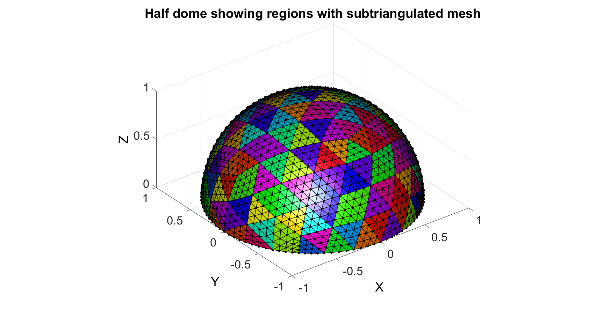

geoSphere and hemiSphereRegionMesh
Below is a demonstration of the features of the hemiSphereRegionMesh function
Contents
clear; close all; clc;
Plot settings
figColor='w'; figColorDef='white'; fontSize=25; faceAlpha=0.75; lineWidth=1; markerSize=5;
Creating a hemisphere mesh using the hemiSphereRegionMesh function
The hemiSphereRegionMesh function creates the faces (F), vertices (or nodes, V) and the region indices (regeionIndSub) for a hemi-sphere according to the input structure hemiSphereStruct. The latter defines the sphere radius, the number of refinement steps for the regions and the number of refinement steps for the mesh. For more information on the refinement see the geoSphere and subTri functions and associated demo files. A complete sphere is first represented as an icosahedron which is then refined (subtriangulated) hemiSphereStruct.nRefineRegions times (whereby for each iteration each triangle is subdevided into 4 triangles). This initial subdevision defines the element regions. The next refinement step defines the number of triangles for each region. The field hemiSphereStruct.nRefineMesh defines how many times each mesh region is iteratively subtriangulated.
EXAMPLE
Defining hemi-sphere parameters
hemiSphereStruct.sphereRadius=1; %Sphere radius hemiSphereStruct.nRefineRegions=2; %Number of refinement steps for regions hemiSphereStruct.nRefineMesh=2; %Number of refinement steps for mesh % Get hemi-sphere mesh [F,V,regionIndSub]=hemiSphereRegionMesh(hemiSphereStruct); % Plotting results %Creating a random color for the each mesh region cmap=hsv(max(regionIndSub(:))); cmap=cmap(randperm(size(cmap,1)),:); %scramble colours hf=figuremax(figColor,figColorDef); hold on; view(3); title('Half dome showing regions with subtriangulated mesh','FontSize',fontSize); xlabel('X','FontSize',fontSize); ylabel('Y','FontSize',fontSize); zlabel('Z','FontSize',fontSize); hp=patch('Faces',F,'Vertices',V); set(hp,'FaceColor','flat','EdgeColor','k','CData',regionIndSub,'FaceAlpha',faceAlpha,'LineWidth',lineWidth,'Marker','o','MarkerFaceColor','k','MarkerEdgeColor','none','MarkerSize',markerSize); colormap(cmap); colorbar; axis tight; axis equal; grid on; set(gca,'FontSize',fontSize);
APPLICATION EXAMPLE: EXPORTING .INP file
Often meshed are created for finite element analysis. Below is an example for exporting a .INP file for the mesh.
elementStruct.E=F; elementStruct.E_ind=1:size(elementStruct.E,1); elementStruct.E_type='*ELEMENT, TYPE=STRI3, ELSET=EB1'; nodeStruct.N=V; nodeStruct.N_ind=1:1:size(nodeStruct.N,1); export_INP(elementStruct,nodeStruct,'C:\Users\kmmoerman\Desktop\temp2.inp');
--- export_INP --- CREATING NODE AND ELEMENT TEXT FIELDS ---> Creating node text field ---> Creating element text field EXPORTING TO INP FILE... DONE!

GIBBON www.gibboncode.org
Kevin Mattheus Moerman, gibbon.toolbox@gmail.com